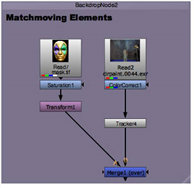
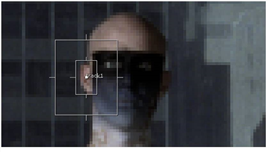
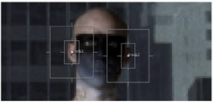
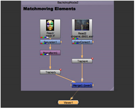

用导航打开主题
匹配移动元素
匹配移动是稳定的相反。目的是记录和使用图像中的运动，并将其应用于另一个元素。在下面的示例中，您将使用跟踪器在背景板上匹配移动并将蒙版图像合成到表演者身上。
匹配-移动元素
注意:
本示例使用自动跟踪，但关键帧跟踪的匹配移动原则相同。
|
|
2.
|
将时间滑块拖动到时间线的开头。选择
ColorCorrect1
节点，然后选择
变换> 跟踪器
.
|

|
|
3.
|
将查看器附加到新
Tracker4
节点，创建跟踪锚点，并定位
轨道 1
锚定在表演者的右耳上。
|

|
|
5.
|
在 “属性” 面板中，选中
T
(翻译),
R
(旋转) 和
S
(规模)
轨道 1
.
|
|
|
7.
|
创建另一个跟踪锚,
轨道 2
,并选中
T
(翻译),
R
(旋转) 和
S
(比例) 在这条赛道上。
|

|
|
8。
|
在中选择两个轨迹
轨道
列出并单击查看器顶部的 “向前跟踪” 以生成跟踪。按照中所述编辑轨迹
跟踪单个特征
如果有必要。
|
|
|
9.
|
一旦表演者上有两个实体轨迹，通过选择并按下来复制轨迹 4 节点
Ctrl + C
复制它。
|
|
|
10.
|
选择
Transform1
节点并按
Ctrl + V
粘贴跟踪器节点副本 (Tracker5)。
|
|
|
11。
|
将查看器连接到
结束
节点。你的节点树现在应该类似于这样:
|

|
|
12.
|
在 Tracker5 属性面板中，单击
变换
标签和选择
匹配-移动
。然后关闭 Tracker5 属性面板。
|
|
|
13。
|
单击查看器中的 “播放” 或渲染 flipbook，您应该会看到狂欢节蒙版变换，以匹配表演者的移动。
|
如果在移动中看到抖动，可以在曲线编辑器中编辑轨迹数据以平滑数据。您还可以添加值，T，R，S 的控制
变换
标签来过滤轨道。